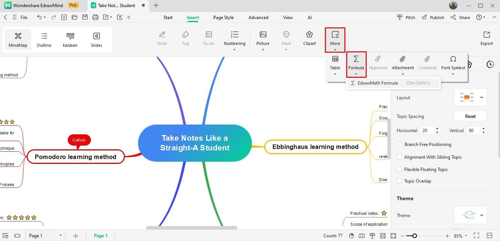

MindMaster 能力盘点：从一张空白画布到专业导图的完整工具箱
系统梳理 MindMaster 的核心能力域——模板生态、节点承载、协作分享、安全保障全覆盖，适合从学生到项目经理的广泛人群，看看你到底能用到哪一层。
MindMaster官网 不是市面上唯一的思维导图软件，但它可能是功能密度最高的那个。从空白画布到能交付给团队的专业导图，它在每一个环节都准备好了工具——以至于第一次打开的人常会被那一排工具栏吓住。这篇盘点不想只列功能清单，而是按"一张导图从诞生到走远"的完整路径，把 MindMaster 的能力面拆开摊开，让你看清楚它究竟能帮你省掉哪些麻烦、又在哪些地方会让你皱一下眉。
从一张空白画布开始：模板生态降低的门槛
对新手来说，思维导图软件最尴尬的时刻就是面对一张完全空白的画布——中心主题放好之后，接下来画什么、怎么分支、层级多深才合适，全是问号。从官方下载拿到安装包后，MindMaster 的解法是把百万量级的模板库直接送进了启动流程：新建时有"从模板新建"入口，首页有导图社区可以按关键词搜，从"考研计划"到"用户增长复盘"，先搜再改比从零开始至少节省一半时间。
套用模板的正确姿势值得单独提一句。很多人拿到模板上来就改内容，结果改完发现层级太深或者分支严重不均衡——模板选的是骨架，不是衣服。正确顺序应该是先改中心主题和一级分支把骨架换掉，再删掉用不上的分支，最后才填细节。这个顺序听起来简单，但能避免被模板原有内容带偏结构。
自己画好的图也可以反哺社区。编辑器右上角那个飞机图标就是发布入口，填好标题简介提交审核，通过后作品就进了社区库。这是官方鼓励的共建玩法，也是很多人积累曝光的途径。当然，社区里也有创作者发布的付费模板，非会员编辑时会有节点数限制和导出水印，但对绝大多数需求来说，免费模板库已经够了。
节点里能装什么：承载能力决定导图的上限
导图的骨架是分支，但真正决定一张图信息密度的是节点里能装多少东西。MindMaster 在这个维度上做了细分的承载方案——不是把所有东西塞成一坨文字，而是按信息性质选择不同的容器。
注释和评论是最常被忽略的一组分工。 注释是富文本便签，鼠标移到节点上就浮出，适合放概念解释、公式推导、参考出处这些"写给自己或看客"的补充信息；评论是围绕节点的对话，面向团队协作场景，队友在你的节点下提问题、给反馈，你在评论里回应。一句话区分：注释是内容的延伸，评论是人的对话。独自用的图基本只碰注释，团队图里评论才出场。
LaTeX 公式和在线表格打开了专业场景的口子。 理科笔记、工程文档、数据分析这些需要装公式和数据的场景，普通导图软件要么做不到要么要导出到别的工具。MindMaster 直接在节点层面提供了这两种能力：选中主题插入公式，用 LaTeX 语法写，实时预览渲染效果，还带快捷符号面板不方便记语法时可以拼；表格则直接挂在节点上，不需要跳出去开 Excel。判断什么时候用表格而不是分支很简单：单一维度的归类用分支，两维以上的对照（比如一周 × 课程的时间表）用表格。

这些承载能力组合起来能支撑相当重的专业内容。有人用 MindMaster 画实验报告导图：中心主题放实验名称，一级分支按目的/方法/数据/结论组织，方法分支挂步骤，数据分支挂表格，结论分支挂公式和统计口径说明，最后用概要功能给整张图下总结论。这套结构套用到大多数理科场景都成立。
画完之后：协作、保存与安全网
导图不是画完就结束了——要分享、要协作、要防止意外丢失。MindMaster 在这条后链路上也铺了完整的保障。
保存时 MindMaster 给了四个去向：存本地文件适合长期归档或二次处理；存个人云是多设备同步的前提；存个人模板方便下次复用；随时可以换格式换位置另存一份。云文件还自带历史版本机制，移动端能直接进入历史版本列表查看和还原，出了问题可以回滚到某个时间点。
意外关闭的恢复机制是另一个安全网。软件崩溃、断电、误关窗口这些事故，MindMaster 通常会在重开时自动弹出恢复提示，点一下就能找回。如果没自动弹，文件菜单里也有文件恢复入口可以手动找，实在找不到就翻MindMaster文档的帮助中心。养成"云文件优先、大图勤保存、重要图双备份"这三条习惯，基本能覆盖大部分丢稿场景。
短板也要说：它不是没有边界
横向盘点不做单向好评。MindMaster 的短板集中在三个点。第一是免费版和会员版的差距会让重度用户很快触顶——公式颜色更换、付费模板完整编辑、高级导出选项这些都卡在会员门槛上。第二是自动备份文件和历史版本的恢复体验在极端场景下仍有不确定性，比如软件被强制终止后有时会出现恢复列表为空的情况。第三是导图社区虽然模板量够大，但质量参差不齐，热门关键词搜出来的前几页往往被重复的爆款模板占满，要挖到好模板得翻得深一点。
什么样的人该用它
最后给个画像，三类人群值得认真上手 MindMaster。
第一类是需要画专业级导图的学生和研究人员——LaTeX 公式支持、表格嵌入、注释里放推导过程，这些能力能让一张导图承载从笔记到论文草稿级别的内容密度。
第二类是项目经理和团队协作者——从模板快速搭建项目导图框架、评论功能逐节点评审讨论、云同步多设备接力编辑，整套协作链路跑通之后能省掉无数来回发截图和开同步会议的时间。
第三类是想建立知识管理体系的个人——从模板开始降低启动门槛、注释挂参考资料出处、云文件同步保证多端一致、文件恢复兜底防丢稿，MindMaster 是那种你越用越会发现它多能帮你省一步的工具。
MindMaster 的核心竞争力不在某一个亮点功能，而在于它把导图软件该覆盖的环节几乎全部铺到了——模板启动、节点承载、协作分享、安全保障，每一段都有对应方案。对它的评估标准也不该是"有没有最酷的单个功能"，而是"从我打开软件到交付给别人，这一路有多少地方需要我跳出 MindMaster 去借助别的工具"。整理这篇盘点时用到的软件资料我同步存到了 GitHub、Gitee、GitCode 方便不同网络环境下查阅。答案在这篇盘点里。